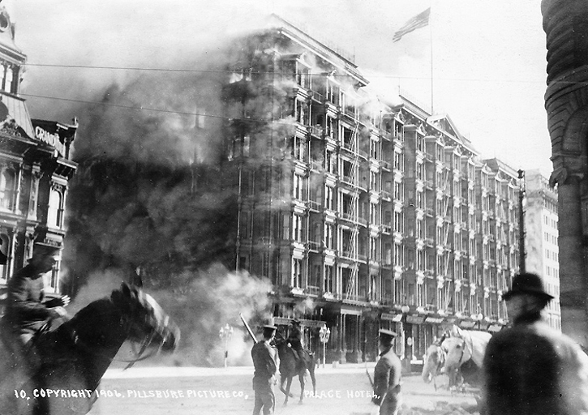
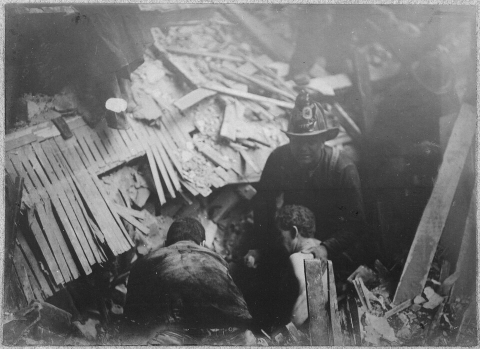
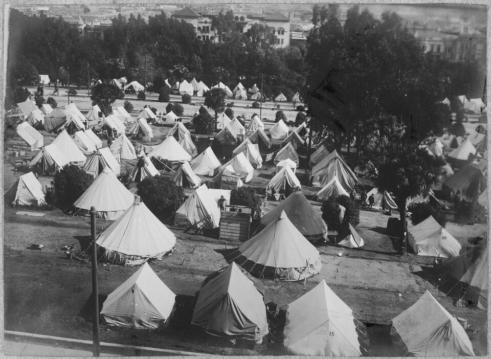
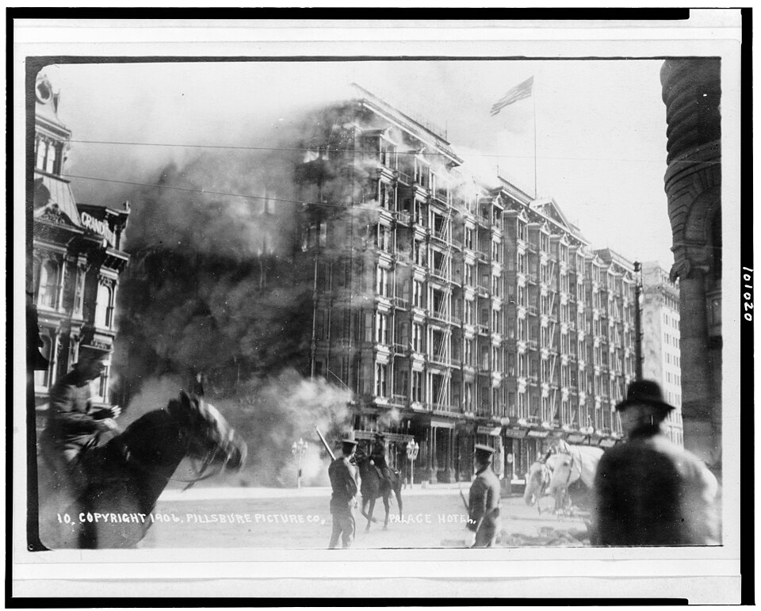
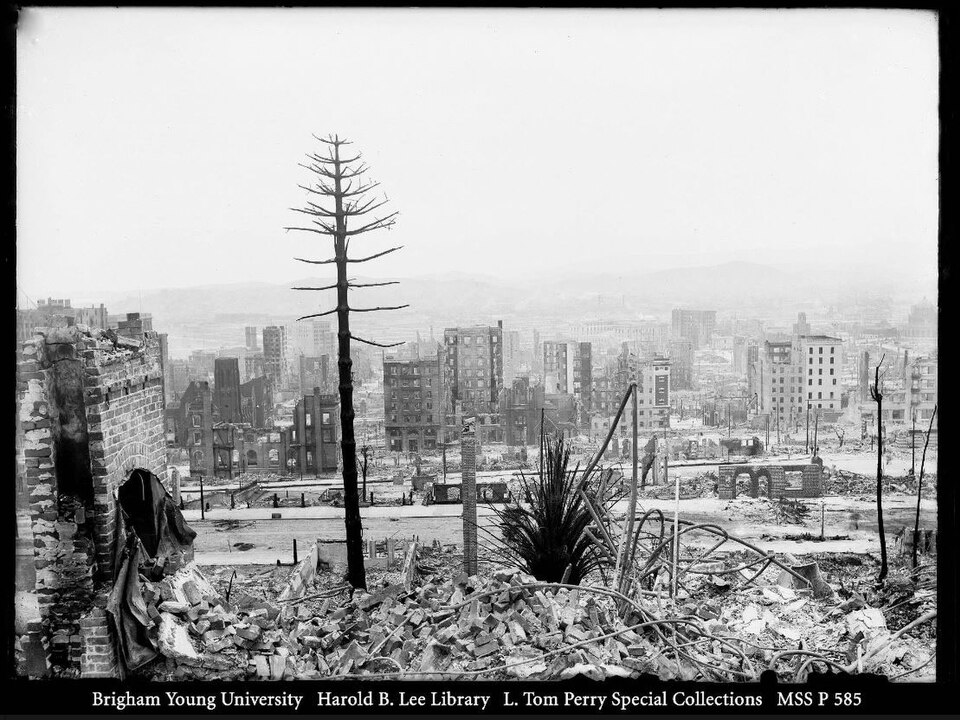
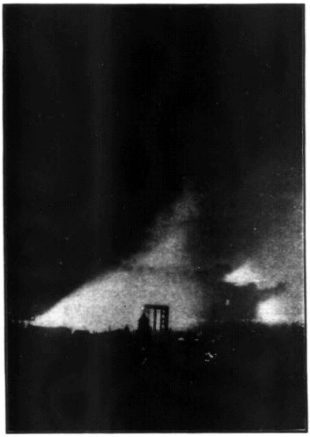

Living Archive — visual review
Research fixture: real archival photos, model-selected captions, and locally rendered views. No UGREEN agent or real rights change. Condition D is a fictional exhibit rule. Green = same file, amber = different file, red = no image; a changed color does not itself establish semantic equivalence.
Open the blinded comparison packet · Open the original-versus-gap overview PNG
Original — Fire, Rescue, Shelter: San Francisco, 1906
Connect the burning city with rescue amid wreckage and residents’ need for shelter. These scenes form a thematic narrative; they do not establish a sequence involving the same people.
PRESERVED

The Palace Hotel burns after the earthquake, April 18, 1906.
Image 09; Pillsbure Picture Co.; Public domain; source record.Evidence and reasoning
Role: Urban fire establishes the disaster threatening residents and their surroundings.
Evidence: catalog.md, entry "09", file "images/09.jpg": "The Palace Hotel burns after the earthquake in San Francisco, April 18, 1906"; date: "Taken on 18 April 1906". rights.md states: "For this local research exhibit all listed source images have Wikimedia Commons metadata marked Public domain or CC0."
Uncertainty: The photograph does not identify the people or establish whether they lived nearby, were evacuating, or lost homes.
PRESERVED

Among the wreckage: a scene cataloged as rescuing people from the ruins.
Image 05; George W. Haley; Public domain; source record.Evidence and reasoning
Role: Rescue brings the narrative from damaged buildings to human vulnerability.
Evidence: catalog.md, entry "05", file "images/05.jpg", source title: "San Francisco Earthquake of 1906, Rescuing people from the ruins - NARA - 522964.tif"; date begins "circa April 1906"; creator: "George W. Haley"; catalog description: "Not stated".
Uncertainty: The rescue interpretation comes from the source title. The visible scene alone does not establish identities, injuries, outcomes, exact location, or whether earthquake shaking or fire caused this wreckage.
PRESERVED

Tents fill the camp identified in the catalog as Jefferson Square’s refugee camp.
Image 14; George W. Haley; Public domain; source record.Evidence and reasoning
Role: Temporary shelter shows a consequence for residents beyond the immediate destruction.
Evidence: catalog.md, entry "14", file "images/14.jpg", source title: "San Francisco Earthquake of 1906, Jefferson Square refugee camp - NARA - 522960.tif"; date begins "circa April 1906"; creator: "George W. Haley". context.md states: "On April 18, 1906, an earthquake struck San Francisco; fires caused extensive damage and many residents needed shelter."
Uncertainty: The camp’s name and purpose come from the catalog title. The photograph does not establish individual residents’ identities, previous homes, length of stay, or connections to the preceding scenes.
Model’s description of change:
Condition A
Image 09 unavailable; Image 04 is another reproduction of the same photograph.
Narrative-guided response — Fire, Rescue, Shelter: San Francisco, 1906
Connect urban fire, rescue amid wreckage, and temporary shelter through three documented scenes. This thematic arrangement does not establish a chronological sequence or show the same people moving between scenes.
CHANGED

Smoke surrounds a large building identified in the catalog as the Palace Hotel on fire, April 18, 1906.
Image 04; Miscellaneous Items in High Demand, PPOC, Library of Congress; Public domain; source record.Evidence and reasoning
Role: Urban fire establishes the disaster affecting the built city.
Evidence: original.json, first panel, records Image 09's original fire role and caption. scenario.md excludes Image 09. catalog.md, entry 04, images/04.jpg: source title and description identify the Palace Hotel on fire during the earthquake and fire of April 18, 1906. catalog.md, entries 01–03, 06–08, 10–13 and 15, supplies the alternative subjects and dates. context.md establishes the earthquake, extensive fire damage and shelter needs. rights.md records Public domain or CC0 source metadata.
Uncertainty: The building's identity and exact date come from the catalog. Visible smoke does not identify the people, establish their danger or displacement, or show whether they were evacuating.
What changed: Replace Image 09 with Image 04; revise the caption to distinguish visible smoke from catalog identification; narrow the role's claim about residents.
Reason: Image 09 supplied evidence of active urban fire, rather than merely later ruins. Image 04 visibly presents the same street-and-building scene and has an independent catalog record explicitly identifying the hotel on fire. It therefore supports the original fire role despite Image 09's unavailability. Image 15 could support general urban fire, while the destruction views would require changing the role toward aftermath. Visual similarity alone is not the basis for selection.
Claim status: Fire claim retained through replacement; claims about residents' circumstances narrowed.
PRESERVED
Among the wreckage: a scene cataloged as rescuing people from the ruins.
Image 05; George W. Haley; Public domain; source record.Evidence and reasoning
Role: A scene cataloged as rescue connects structural destruction with human vulnerability.
Evidence: original.json, second panel. catalog.md, entry 05, images/05.jpg: source title 'San Francisco Earthquake of 1906, Rescuing people from the ruins - NARA - 522964.tif'; date circa April 1906; creator George W. Haley; catalog description 'Not stated'. scenario.md excludes only Image 09. rights.md records the collection's source rights metadata.
Uncertainty: The rescue interpretation comes from the source title. The visible scene alone does not establish identities, injuries, outcomes, exact location, or whether earthquake shaking or fire caused this wreckage.
What changed: Retain Image 05 and its caption; make the source-qualified rescue interpretation explicit in the role.
Reason: The original image supplied a catalog-supported rescue scene, with visible figures amid debris. It remains eligible. Neither the street figures in Image 04 nor the ruin views establish rescue, so they would not preserve this role. No replacement is needed.
Claim status: Retained with explicit attribution; individual circumstances and rescue outcomes remain unclaimed.
PRESERVED
Tents fill the camp identified in the catalog as Jefferson Square’s refugee camp.
Image 14; George W. Haley; Public domain; source record.Evidence and reasoning
Role: Temporary shelter shows a documented response to residents' needs beyond immediate destruction.
Evidence: original.json, third panel. catalog.md, entry 14, images/14.jpg: source title 'San Francisco Earthquake of 1906, Jefferson Square refugee camp - NARA - 522960.tif'; date circa April 1906; creator George W. Haley. context.md states that the earthquake and fires left many residents needing shelter. scenario.md excludes only Image 09. rights.md records the collection's source rights metadata.
Uncertainty: The camp's name and purpose come from the catalog title. The photograph does not establish individual residents' identities, previous homes, length of stay, or connections to the preceding scenes.
What changed: Retain Image 14 and its caption; clarify the role as shelter responding to documented needs.
Reason: The original image supplied visible tents and a catalog identification of a refugee camp, supported by context.md's account of shelter needs. It remains eligible. Ruin photographs cannot establish shelter provision, and Image 07's exposition structures do not support that claim. No replacement is needed.
Claim status: Retained with catalog and contextual support; links to particular people or preceding scenes remain unclaimed.
Model’s description of change: Replace unavailable Image 09 with eligible Image 04 and revise the first caption to attribute the building identification and date to its catalog record. Retain Images 05 and 14 and their captions. Image 09 originally supported active urban fire; Image 04 supports that same role through visible smoke around a multistory building and a catalog identification of the Palace Hotel on fire. Image 15 supports a broader city-fire claim but lacks the same building identification; Images 01, 02, 06, 08, 10, 11 and 13 chiefly support destruction or aftermath rather than this specific active-fire scene. Image 12 shows smoke and ruins but lacks the same building identification. Images 03 and 07 concern other dates and subjects. The rescue and shelter claims remain qualified by their source titles. No panel gap is necessary because Image 04 supports the original fire role. The exclusion in scenario.md is an availability restriction; rights.md records unchanged source metadata.
Condition B
The sole cataloged rescue image 05 is unavailable.
Narrative-guided response — Fire, Ruins, Shelter: San Francisco, 1906
Connect urban fire, the damaged city, and temporary shelter while distinguishing visible details from archival identifications. The rescue claim is abandoned because no eligible photograph and source record establish an equivalent scene. These photographs depict different places and moments, not a sequence involving the same people.
PRESERVED
The Palace Hotel burns after the earthquake, April 18, 1906.
Image 09; Pillsbure Picture Co.; Public domain; source record.Evidence and reasoning
Role: Urban fire establishes the disaster in the built environment.
Evidence: original.json, panel 1, records the original fire role. catalog.md, entry 09, images/09.jpg, identifies the Palace Hotel burning after the earthquake and dates the photograph to April 18, 1906. context.md supplies the earthquake and fire context. scenario.md excludes only 05. rights.md records Public domain or CC0 metadata for listed sources.
Uncertainty: The photograph does not identify the people or establish whether they were residents, evacuating, or losing homes. The building identification and exact date come from the catalog.
What changed: Retain image 09 and its original caption; narrow the role to the visible urban fire rather than implying particular residents' experiences.
Reason: Image 09 remains eligible and directly supports the fire role through visible smoke and the catalog identification. Image 04 offers another documented Palace Hotel fire view, while 15 supports a broader fire subject; neither adds evidence necessary for this panel.
Claim status: Fire claim retained; implications about particular residents narrowed.
CHANGED

A bare tree, rubble and damaged buildings: San Francisco after the earthquake and fire, viewed southwest from Nob Hill, according to the catalog.
Image 02; Edith Irvine; Public domain; source record.Evidence and reasoning
Role: The damaged urban environment connects the fire scene with the broader consequences of the disaster.
Evidence: original.json, panel 2, identifies 05's original rescue role and attributes that interpretation to its source title. scenario.md makes 05 unavailable. catalog.md, entry 02, images/02.jpg, dates the photograph to 1906, credits Edith Irvine, and describes the view from Nob Hill looking southwest after the earthquake and fire. context.md states that fires caused extensive damage. rights.md records the listed sources' rights metadata.
Uncertainty: Neither visible rubble nor the catalog description establishes a rescue operation, casualties, particular displaced residents, or a connection to the people in the other panels. The viewpoint and historical identification come from catalog.md.
What changed: Replace unavailable 05 with 02, rewrite the caption and role around urban damage, and remove rescue from the exhibit title and narrative claim.
Reason: The original rescue interpretation depended on 05's source title. Although 02 and other eligible ruin views contain debris, their records and visible content do not establish rescue. Image 02 supports a different, narrower claim about the damaged city. It therefore replaces the middle panel's subject, not the evidentiary function of the rescue photograph; rescue remains unrepresented.
Claim status: Original rescue claim abandoned; replaced with a supported urban-damage claim.
PRESERVED
Tents fill the camp identified in the catalog as Jefferson Square’s refugee camp.
Image 14; George W. Haley; Public domain; source record.Evidence and reasoning
Role: Temporary shelter shows a documented response to residents' need for accommodation after the disaster.
Evidence: original.json, panel 3, records the original shelter role. catalog.md, entry 14, images/14.jpg, source title 'San Francisco Earthquake of 1906, Jefferson Square refugee camp - NARA - 522960.tif', dates the image to circa April 1906 and credits George W. Haley; its description is 'Not stated'. context.md states that many residents needed shelter. scenario.md excludes only 05. rights.md records the listed sources' rights metadata.
Uncertainty: The camp's name and refugee function come from the source title. The photograph does not establish individual occupants' identities, previous homes, length of stay, or connections to either preceding scene.
What changed: Retain image 14 and its original caption; preserve the distinction between visible tents and the catalog's identification of their purpose.
Reason: Image 14 remains eligible and combines visible tents with a source title identifying a refugee camp. The eligible fire and ruin photographs do not establish temporary accommodation and would not support this role. Retaining 14 preserves the supported human consequence without implying that it supplies missing rescue evidence.
Claim status: Shelter claim retained with explicit catalog attribution and limits.
Model’s description of change: Original evidence roles were assessed before selection: 09 documented urban fire; 05 supplied a source-title-based rescue interpretation; 14 documented tents identified by its source title as a refugee camp. scenario.md excludes 05 specifically, not photographs of destruction generally. For the fire role, 04 offers another Palace Hotel fire view and 15 is cataloged as a blazing city, but neither requires replacing the eligible, well-supported 09. For rescue, the rubble in 01, 02, 08, 10, 11 and 12, and the wider ruins in 06 and 13, do not establish people being rescued. Image 03 concerns 1989 and 07 concerns 1915; neither supports this 1906 narrative. Image 14 supports shelter, not rescue. Therefore 02 replaces 05 only under a new role documenting the damaged urban environment; it is not a rescue substitute. Image 14 remains the strongest eligible shelter image. Panel order remains fire, middle scene, shelter. The title changes from 'Fire, Rescue, Shelter' to 'Fire, Ruins, Shelter'; the middle image and caption change, and rescue coverage is explicitly relinquished. No publication or legal rights change is asserted.
Generic curator response — Fire, Ruins, Shelter: San Francisco, 1906
Connect urban fire, damaged surroundings and the need for temporary shelter through three distinct scenes. The photographs do not establish a sequence involving the same people or document rescue.
PRESERVED
The Palace Hotel burns after the earthquake, April 18, 1906.
Image 09; Pillsbure Picture Co.; Public domain; source record.Evidence and reasoning
Role: Urban fire establishes the disaster affecting the city.
Evidence: catalog.md, entry 09, images/09.jpg: identifies the Palace Hotel burning after the earthquake and dates the photograph April 18, 1906. context.md establishes the earthquake and extensive fire damage. rights.md records Public domain or CC0 metadata for listed sources.
Uncertainty: The building identification and date come from the catalog. The photograph does not identify the people or establish whether they were evacuating, lived nearby or lost homes.
What changed: Retained Image 09, its first position and its original caption; narrowed the role to the documented urban disaster.
Reason: The visible smoke and catalog identification support the fire panel, and scenario.md does not exclude this image.
Claim status: Retained: the catalog supports the named building, event and date; individual experiences remain unestablished.
CHANGED
A bare tree trunk stands amid rubble and damaged buildings. The catalog identifies this as a view southwest from Nob Hill after San Francisco's 1906 earthquake and fire.
Image 02; Edith Irvine; Public domain; source record.Evidence and reasoning
Role: Damaged surroundings connect the burning city with the disaster's aftermath.
Evidence: scenario.md states that Image 05 is unavailable. catalog.md, entry 02, images/02.jpg: Edith Irvine, 1906; describes a view southwest from Nob Hill after the earthquake and fire, with a bare tree trunk, rubble and damaged buildings. original.json identifies the replaced panel as rescue using Image 05. rights.md records Public domain or CC0 metadata for listed sources.
Uncertainty: The location and historical circumstances come from the catalog. This photograph does not establish rescue activity, casualties, the displacement of particular residents or the separate effects of shaking and fire on each structure.
What changed: Replaced Image 05 with Image 02; rewrote the role, caption and supporting interpretation from rescue to damaged surroundings.
Reason: Image 05 is excluded. Image 02 visibly and textually supports an aftermath panel, but cannot carry the original rescue claim.
Claim status: Changed: abandoned the rescue claim and substituted a supported account of rubble and damaged surroundings.
PRESERVED
Tents fill the camp identified in the catalog as Jefferson Square’s refugee camp.
Image 14; George W. Haley; Public domain; source record.Evidence and reasoning
Role: Temporary shelter introduces a documented response to residents' needs after the disaster.
Evidence: catalog.md, entry 14, images/14.jpg: source title identifies Jefferson Square refugee camp; date circa April 1906; creator George W. Haley; catalog description is not stated. context.md states that many residents needed shelter after the earthquake and fires. rights.md records Public domain or CC0 metadata for listed sources.
Uncertainty: The camp's name and purpose come from the catalog title. The photograph does not establish individual residents' identities, previous homes, length of stay or connections to either preceding scene.
What changed: Retained Image 14, its third position and its original caption; adjusted the role to fit the revised fire–ruins–shelter narrative.
Reason: The visible tents and catalog title support a shelter panel, while context.md supports the broader need for shelter.
Claim status: Retained: tents are visible; camp identification is catalog-based, and no individual displacement story is asserted.
Model’s description of change: Retained Images 09 and 14 in their original positions with their captions unchanged. Replaced unavailable Image 05 with Image 02 and changed the middle panel from rescue to damaged surroundings. Replaced 'Rescue' with 'Ruins' in the title and narrowed the narrative accordingly. These are fictional exhibit selections; actual rights metadata remain unchanged.
Condition C
The sole cataloged shelter image 14 is unavailable.
Narrative-guided response — Fire, Rescue, and a Missing View of Shelter: San Francisco, 1906
Connect urban fire with a cataloged rescue scene, then acknowledge the limit of the available photographs: historical context establishes that many residents needed shelter, but no eligible photograph establishes a shelter scene. The panels do not trace the same people or a documented sequence.
PRESERVED
The Palace Hotel burns after the earthquake, April 18, 1906, according to the catalog.
Image 09; Pillsbure Picture Co.; Public domain; source record.Evidence and reasoning
Role: Urban fire establishes the disaster in the city.
Evidence: original.json, first panel; catalog.md, entry 09, images/09.jpg, identifies the Palace Hotel burning on April 18, 1906; context.md establishes the earthquake and extensive fire damage. rights.md records Public domain or CC0 metadata for listed sources; scenario.md excludes only IMAGE 14.
Uncertainty: The building identification and date come from the catalog. The photograph does not identify the people or establish their residence, evacuation, injuries, or housing losses.
What changed: Retained IMAGE 09 and its fire claim; attributed the caption's identification and date to the catalog and narrowed the role to the city fire.
Reason: The original image supplies visible smoke and a street scene, with catalog support for the specific fire. IMAGE 04 depicts the same fire scene with a surrounding print border and supports the same role, but replacing an eligible original adds no necessary evidence. IMAGE 15 supports a broader fire subject without the same specific hotel identification.
Claim status: Retained: catalog-supported urban fire. Narrowed: no claim about the circumstances of visible individuals.
PRESERVED
Among the wreckage: a scene cataloged as rescuing people from the ruins.
Image 05; George W. Haley; Public domain; source record.Evidence and reasoning
Role: A cataloged rescue scene brings people amid wreckage into view.
Evidence: original.json, second panel; catalog.md, entry 05, images/05.jpg, source title 'San Francisco Earthquake of 1906, Rescuing people from the ruins - NARA - 522964.tif,' dated circa April 1906, creator George W. Haley; catalog description is 'Not stated.' scenario.md does not exclude IMAGE 05; rights.md records the listed sources' metadata status.
Uncertainty: Rescue is the source title's interpretation. Visible figures and debris alone do not establish identities, injuries, rescue outcomes, exact location, or whether shaking or fire caused the wreckage.
What changed: Retained IMAGE 05 and its qualified caption; revised the role to make the catalog basis of the rescue interpretation explicit.
Reason: The original supports people amid wreckage and a title-attributed rescue interpretation. Alternatives such as IMAGE 01 or IMAGE 12 show destruction but do not establish rescue; they would not preserve this role. No restriction requires replacing IMAGE 05.
Claim status: Retained with attribution: cataloged rescue. Unverified individual circumstances and outcomes remain unclaimed.
GAP
NO IMAGE SELECTED
Many residents needed shelter after the earthquake and fires, according to the historical context. The original camp photograph is unavailable for this exhibit; no eligible photograph in this collection establishes a shelter scene.
Evidence and reasoning
Role: A visible gap distinguishes documented shelter need from unavailable photographic evidence.
Evidence: scenario.md states 'Image 14 is unavailable for this exhibit.' original.json, third panel, records its former Jefferson Square refugee-camp attribution. context.md states that many residents needed shelter and cautions against inferring displacement from image contents. catalog.md, entries 01–13 and 15, supplies the eligible alternatives' subjects and dates; sheet-1.jpg, sheet-2.jpg, and sheet-3.jpg show those photographs. rights.md distinguishes factual metadata status from exercise restrictions.
Uncertainty: Historical context supports shelter need generally, without identifying displaced people in the retained photographs. The eligible photographs do not establish a camp, temporary accommodation, or a connection between pictured people and shelter provision.
What changed: Removed IMAGE 14 and its Jefferson Square camp caption. Left the image area empty and replaced the photographic shelter claim with contextual text explaining the evidence gap.
Reason: The original combined visible tents with a recorded camp attribution to support temporary shelter. IMAGE 02's open rubble area, IMAGE 10's street view, and IMAGE 13's broad city view do not establish accommodation. Images 01, 06, 08, 11, and 12 document destruction, not shelter provision; 04, 09, and 15 concern fire, and 05 concerns cataloged rescue. IMAGE 07 depicts a 1915 exposition, and IMAGE 03 depicts a 1989 bridge collapse. None supports the original shelter role, so a replacement would falsely imply equivalence.
Claim status: Abandoned: photographic demonstration of temporary shelter and the displayed Jefferson Square attribution. Retained as context only: many residents needed shelter. Replaced: camp panel with an explicit photographic gap.
Model’s description of change: Retained IMAGE 09 for urban fire and IMAGE 05 for cataloged rescue, preserving their evidentiary limits. Removed IMAGE 14 because scenario.md makes it unavailable. Left the third panel without a photograph and replaced its camp caption with historical context and an explicit gap. Compared the eligible alternatives with the original shelter role: destruction views cannot establish temporary accommodation, and photographs of other events cannot substitute for 1906 shelter. Changed the title and narrative accordingly. No publication or legal rights change is asserted.
Generic curator response — Fire, Rescue, Ruins: San Francisco, 1906
Connect urban fire, a scene cataloged as rescue, and the damaged city left after the earthquake and fires. These photographs show different places and moments, not a documented sequence involving the same people. The revised exhibit no longer illustrates temporary shelter.
PRESERVED
The Palace Hotel burns after the earthquake, April 18, 1906.
Image 09; Pillsbure Picture Co.; Public domain; source record.Evidence and reasoning
Role: Urban fire establishes the disaster within the inhabited city.
Evidence: catalog.md, entry 09, identifies the Palace Hotel burning after the earthquake and dates the photograph to April 18, 1906. context.md establishes the earthquake and extensive fire damage. rights.md records Public domain or CC0 metadata for listed source images.
Uncertainty: The photograph does not identify the people or establish whether they lived nearby, were evacuating, or lost homes.
What changed: Retained image 09, its position, and its caption; narrowed the role to what the photograph and catalog establish.
Reason: The image remains eligible and provides a supported opening scene of urban fire.
Claim status: Retained: building identity and date are catalog-supported; smoke, people, and horses are visually observable.
PRESERVED
Among the wreckage: a scene cataloged as rescuing people from the ruins.
Image 05; George W. Haley; Public domain; source record.Evidence and reasoning
Role: A scene cataloged as rescue brings human activity amid wreckage into view.
Evidence: catalog.md, entry 05, source title: "San Francisco Earthquake of 1906, Rescuing people from the ruins - NARA - 522964.tif"; date: circa April 1906; creator: George W. Haley; catalog description: "Not stated". rights.md records Public domain or CC0 metadata for listed source images.
Uncertainty: The rescue interpretation comes from the source title. The visible scene alone does not establish identities, injuries, outcomes, exact location, or whether earthquake shaking or fire caused this wreckage.
What changed: Retained image 05, its position, and its qualified caption; revised the role to attribute the rescue interpretation explicitly to the catalog.
Reason: The source supports presenting a rescue interpretation with attribution, while the photograph visibly supports human activity amid debris.
Claim status: Qualified: rescue is a catalog attribution, not independently established by visible details.
CHANGED
Rubble and damaged buildings in San Francisco after the earthquake and fire, 1906. Edith Irvine’s view looks southwest from Nob Hill.
Image 02; Edith Irvine; Public domain; source record.Evidence and reasoning
Role: The damaged urban environment extends the story from immediate danger to the city's aftermath.
Evidence: scenario.md makes image 14 unavailable. catalog.md, entry 02, credits Edith Irvine, dates the photograph to 1906, and describes the view from Nob Hill looking southwest after the earthquake and fire, with a bare tree trunk, rubble, and damaged buildings. context.md establishes extensive damage and residents' need for shelter but does not identify shelter in this photograph. rights.md records Public domain or CC0 metadata for listed source images.
Uncertainty: This photograph does not establish who lost homes, where residents found shelter, or how long recovery took. Its position in the exhibit does not establish a chronological relationship to image 05.
What changed: Removed image 14 and its camp caption. Replaced it with image 02 and a caption about urban damage; abandoned the third panel's photographic shelter claim.
Reason: Image 14 is excluded by the changed condition. Image 02 offers visible and catalog-supported evidence of the aftermath without misidentifying another scene as temporary shelter.
Claim status: Changed: aftermath is visually and catalog-supported; shelter is no longer claimed or illustrated by this panel.
Model’s description of change: Retained images 09 and 05 in their original positions. Replaced unavailable image 14 with image 02 and changed the third panel from temporary shelter to the damaged urban environment. Revised the title and narrative accordingly. No eligible photograph in the supplied contact sheets and catalog supports replacing the camp photograph with another shelter scene.
Condition D
Fictional public-exhibit restriction: 09 and its duplicate 04 are both excluded; files still exist. Actual source licenses remain unchanged.
Narrative-guided response — Fire, Rescue, Shelter: San Francisco, 1906
Connect urban fire, rescue amid wreckage and temporary shelter through three archival views. These are thematic connections between different scenes, not a documented sequence involving the same people.
CHANGED

A bright glow and dark smoke rise behind silhouetted structures in a photograph cataloged as “The blazing city,” San Francisco, 1906.
Image 15; Unknown photographer (probably from the Call in San Francisco.; Public domain; source record.Evidence and reasoning
Role: Urban fire establishes the disaster’s setting; historical context supplies its consequences for residents.
Evidence: original.json, panel 1, records IMAGE 09 as evidence of the Palace Hotel burning on April 18, 1906. scenario.md excludes both 09 and 04 as copies of the same pictured work. catalog.md, entry 15, images/15.jpg, dates the photograph to 1906 and quotes the historical caption “The blazing city.” catalog.md, entry 11, identifies distant smoke as the Hayes Valley fire; entries 01, 02, 06, 12 and 13 describe destruction or ruins after earthquake and fire. context.md establishes extensive fire damage and residents’ need for shelter. rights.md states that the listed metadata remains Public domain or CC0.
Uncertainty: The photograph does not establish a particular burning building, exact exposure date, residents’ identities or evacuation. The San Francisco, 1906 identification and fire interpretation rely on catalog evidence.
What changed: Replace 09 with 15. Remove the Palace Hotel identification and April 18 exposure date from the caption; describe the visible scene and attribute the historical fire caption.
Reason: IMAGE 15 supports the original broad urban-fire role through its visible glow and plume together with the catalog caption, but cannot preserve the specific Palace Hotel claim. IMAGE 04 would preserve that subject but is explicitly excluded. IMAGE 11 supports distant fire through its catalog record but foregrounds damaged City Hall. IMAGE 12 and the other aftermath views support destruction rather than an equivalent depiction of active burning. IMAGE 15 therefore preserves the broad role without asserting equivalence to the original event detail.
Claim status: Broad urban-fire claim retained with narrower specificity; Palace Hotel identification and exact date abandoned.
PRESERVED
Figures gather among broken boards and debris in a scene cataloged as “Rescuing people from the ruins,” circa April 1906.
Image 05; George W. Haley; Public domain; source record.Evidence and reasoning
Role: A scene cataloged as rescue connects structural destruction with human vulnerability.
Evidence: original.json, panel 2; catalog.md, entry 05, images/05.jpg, source title “San Francisco Earthquake of 1906, Rescuing people from the ruins - NARA - 522964.tif,” circa April 1906, George W. Haley; catalog description: “Not stated.” scenario.md excludes 09 and 04, not 05. rights.md supplies the collection’s unchanged rights metadata.
Uncertainty: Rescue is the source title’s interpretation. The visible scene alone does not establish identities, injuries, outcomes, exact location, or whether shaking or fire caused the wreckage.
What changed: Retain IMAGE 05 and its position. Rewrite the caption to combine visible figures and debris with explicitly attributed catalog interpretation and approximate date.
Reason: The original evidence was the combination of figures amid wreckage and a source title identifying rescue. That support remains available under the restriction. General ruin views such as 01 or 12 would not establish rescue and would weaken this specific role; replacement is unnecessary.
Claim status: Retained as a catalog-attributed rescue interpretation; no individual rescue outcome asserted.
PRESERVED
Closely spaced tents fill an area identified in the catalog as Jefferson Square’s refugee camp, circa April 1906.
Image 14; George W. Haley; Public domain; source record.Evidence and reasoning
Role: Temporary shelter broadens the story from destruction and rescue to the need for accommodation.
Evidence: original.json, panel 3; catalog.md, entry 14, images/14.jpg, source title “San Francisco Earthquake of 1906, Jefferson Square refugee camp - NARA - 522960.tif,” circa April 1906, George W. Haley. context.md states that fires caused extensive damage and many residents needed shelter. scenario.md does not exclude 14. rights.md supplies the collection’s unchanged rights metadata.
Uncertainty: The camp’s name and purpose come from the catalog title. Neither the photograph nor the supplied context establishes individual occupants’ identities, previous homes, length of stay, or connections to either preceding scene.
What changed: Retain IMAGE 14 and its position. Rewrite the caption to distinguish visible tents from the catalog’s identification and add the approximate date.
Reason: The original evidence combined visible tents, catalog identification as a refugee camp and contextual evidence of shelter needs. It still supports that role. The available destruction views cannot substitute for evidence of shelter, and no replacement is required by the restriction.
Claim status: Shelter role retained with catalog attribution; connections to particular people or preceding scenes remain unestablished.
Model’s description of change: Replace IMAGE 09 with IMAGE 15 and rewrite the first caption: the specific Palace Hotel fire claim is abandoned, while the broader urban-fire role is retained with reduced specificity. IMAGE 04 cannot substitute because scenario.md excludes both copies of that pictured work. Retain IMAGE 05 and IMAGE 14 with captions that explicitly attribute rescue and camp identification to catalog titles. Keep the original order and title. The exercise restriction does not change the rights metadata.
Source and attribution
Images are Wikimedia Commons thumbnails. Each source record lists the creator, catalog description and public-domain status. Original real rights have not changed; verify independently for reuse.
- 01: Willard Worden view from Kearny St after 1906 San Francisco earthquake and fire.jpg; Willard Worden; Public domain — source
- 02: The Burned Tree after the 1906 San Francisco Earthquake.jpg; Edith Irvine; Public domain — source
- 03: Bay Bridge collapse.jpg; C.E. Meyer; Public domain — source
- 04: Palace Hotel on fire, San Francisco, California, during earthquake and fire of April 18, 1906 LCCN90709525.jpg; Miscellaneous Items in High Demand, PPOC, Library of Congress; Public domain — source
- 05: San Francisco Earthquake of 1906, Rescuing people from the ruins - NARA - 522964.tif; George W. Haley; Public domain — source
- 06: San Francisco 1906 earthquake Panoramic View.jpg; Lester C. Guernsey; Public domain — source
- 07: Japan Beautiful, Panama-Pacific International Exposition, San Francisco, 1915.jpg; Cardinell-Vincent Company; Public domain — source
- 08: Our San Francisco (1906 earthquake) 2.jpg; Unknown photographer (probably from the Call in San Francisco.; Public domain — source
- 09: Palace Hotel Fire April 18, 1906.jpg; Pillsbure Picture Co.; Public domain — source
- 10: Landscape photograph of San Francisco during the Earthquake and Fire of 1906 - NARA - 296861.tif; Unknown author Unknown author or not provided; Public domain — source
- 11: Our San Francisco (1906 earthquake) 1.jpg; Unknown photographer (probably from the Call in San Francisco.; Public domain — source
- 12: Ruins of earthquake and fire, San Francisco, Calif. 1906 LCCN2003671866.jpg; Miscellaneous Items in High Demand, PPOC, Library of Congress; Public domain — source
- 13: San Francisco in ruin edit2.jpg; George R. Lawrence (1869-1938), George R. Lawrence Co.; Public domain — source
- 14: San Francisco Earthquake of 1906, Jefferson Square refugee camp - NARA - 522960.tif; George W. Haley; Public domain — source
- 15: Our San Francisco (1906 earthquake) 3.jpg; Unknown photographer (probably from the Call in San Francisco.; Public domain — source


_3.jpg){kind=link}


_2.jpg){kind=link}
_1.jpg){kind=link}